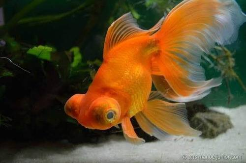

Peixe Oranda | Aquapet

Informações do Produto
GUIA DE CUIDADOS
Tamanho: Em adultos, os Orandas podem atingir aproximadamente 15 a 25 cm, podendo ultrapassar este tamanho em condições favoráveis.
Origem: Variedade ornamental do peixe-dourado, desenvolvida na Ásia Oriental através de seleção em cativeiro.
Longevidade: Entre 10 e 15 anos, podendo viver mais de 20 anos quando mantidos em condições adequadas.
Habitat Natural: O Oranda é uma variedade doméstica do peixe-dourado, não existindo como variedade selvagem natural. Os seus antepassados habitavam ambientes de água doce.
Os peixes Oranda são conhecidos pela sua aparência ornamental, corpo arredondado, barbatanas desenvolvidas e crescimento carnudo na região da cabeça, conhecido como "wen".
Apresentam geralmente um comportamento pacífico e podem conviver com outros peixes-dourados de variedades compatíveis.
Apesar da sua aparência delicada, necessitam de aquários espaçosos, boa filtragem e manutenção regular da qualidade da água.
Aquário
Tamanho: Recomenda-se um aquário com aproximadamente 100 a 150 litros ou mais para um Oranda adulto, dependendo do tamanho do peixe e das condições do sistema.
Para manter vários exemplares, deverá aumentar a capacidade do aquário e a filtragem.
Material: Vidro ou acrílico apropriado para aquários.
Espaço de natação: O aquário deverá possuir uma área livre suficiente para permitir movimentos confortáveis.
Temperatura e Iluminação
Os peixes Oranda são peixes de água doce temperada.
A temperatura recomendada situa-se geralmente entre 18 °C e 24 °C.
Em regiões quentes, como Cabo Verde, é importante evitar o aquecimento excessivo da água.
O aquário deverá ficar afastado da exposição solar direta e de fontes de calor.
A iluminação deverá respeitar um ciclo regular de dia e noite, com aproximadamente 8 a 10 horas de luz por dia.
Qualidade da Água
A qualidade da água é essencial para manter os peixes Oranda saudáveis.
Temperatura: 18 °C a 24 °C.
pH: Aproximadamente 7,0 a 8,0.
Amónia: 0 mg/L.
Nitritos: 0 mg/L.
Nitratos: Preferencialmente abaixo de 20 a 40 mg/L.
Recomenda-se um sistema de filtragem biológica e mecânica adequado.
As trocas parciais de água devem ser realizadas regularmente, conforme os resultados dos testes.
A água nova deverá ser tratada para remover cloro e cloraminas, quando presentes, e apresentar temperatura próxima da água do aquário.
Decoração
O aquário pode incluir plantas naturais resistentes, troncos apropriados e elementos decorativos seguros.
Recomenda-se utilizar substrato fino e adequado, evitando pedras pequenas que possam ficar presas na boca dos peixes.
Os objetos decorativos não deverão possuir arestas cortantes, pois as barbatanas dos Orandas são delicadas.
Dieta e Suplementação
Hábitos alimentares: Omnívoro.
Os peixes Oranda necessitam de uma alimentação variada e equilibrada.
Recomenda-se oferecer pequenas porções, evitando a sobrealimentação.
Alimentos
Ração: Rações de qualidade formuladas especificamente para peixes-dourados ornamentais, preferencialmente de afundamento.
Vegetais: Ervilhas cozidas sem casca, pequenas porções de curgete e outros vegetais apropriados.
Alimentos complementares: Artémia, dáfnias e outros alimentos adequados, oferecidos ocasionalmente.
Suplementação
Uma ração completa e variada geralmente fornece os nutrientes necessários ao peixe.
Suplementos adicionais só deverão ser utilizados quando existir uma necessidade identificada.
Comportamento e Compatibilidade
Os Orandas são geralmente pacíficos e apresentam movimentos relativamente lentos.
Podem conviver com outras variedades de peixes-dourados ornamentais de natação semelhante, desde que exista espaço adequado.
Deve evitar-se a convivência com peixes agressivos ou muito rápidos que possam competir excessivamente pela alimentação.
Saúde e Bem-estar
Observe regularmente o comportamento, o apetite, a respiração e a condição das barbatanas.
Os Orandas podem apresentar problemas de flutuabilidade, infeções e alterações relacionadas com a qualidade da água.
O crescimento carnudo da cabeça deve ser observado regularmente, pois pode desenvolver irritações ou infeções.
Perante sinais persistentes de doença, recomenda-se consultar um profissional especializado em peixes ornamentais.
Antes de adquirir um peixe ornamental, confirme que possui um aquário adequado e condições para garantir o seu bem-estar. Nunca liberte peixes ornamentais em rios, lagos ou outros ambientes naturais.
Preço: 1.000,00 CVE
Para informações sobre disponibilidade, entre em contacto com a nossa loja.
Entrar em Contacto